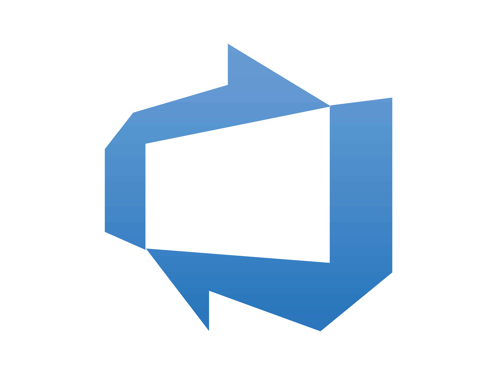

<div id="menu">
  <div id="menu-items">
    <!-- Itemki z menu -->
    <div class="menu-item" [routerLink]="['/welcome']" >Strona główna</div>
    <div class="menu-item" [routerLink]="['/places']" >Atrakcje</div>
    <div class="menu-item" [routerLink]="['/about']">O naszej stronie</div>
    <div class="menu-item" [routerLink]="['/contact']">Kontakt</div>
  </div>
  <div id="menu-background-pattern"></div>
  <div id="menu-background-image"></div>
</div>

<a id="source-link" class="meta-link" href="https://dev.azure.com/olkowskik/pomorzenadwislanskie/_git/pomorzenadw-vapril" target="_blank">
  <i class="fa-solid fa-link"></i>
  <span>Repozytorium Azure </span>
</a>

